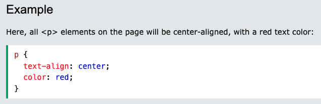
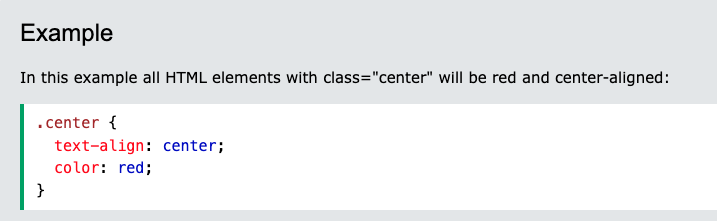
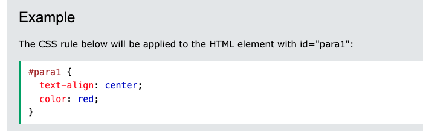

CSS 실습 전 간단한 문법을 배워 봅시다.
CSS는 '어떤 걸 선택'해서 '속성을 부여'하는 방식으로 이루어집니다.
참고 자료
- 태그(요소)전체를 선택 할 수 있습니다.
- 클래스(class)를 이용해 해당 클래스에 속하는 요소들을 선택 할 수 있습니다.
- 아이디(id)를 이용해 어떤 특정 요소만을 선택 할 수 있습니다.
CSS 문법
Element Selector
선택하고 싶은 tag 이름을 쓰고 {}안에 속성을 부여합니다.

Class Selector
.(점)과 선택하고 싶은 class 이름을 쓰고 {}안에 속성을 부여합니다.

ID Selector
#(샾)과 선택하고 싶은 id 이름을 쓰고 {}안에 속성을 부여합니다.

본격적으로 CSS 실습을 해봅시다.
위 예시를 참고하여 <style></style>태그 안에 css 문법을 작성하여 요소들의 색깔을 변경해 봅시다.
이것은 h1태그 입니다.
이것도 h1태그 입니다. "title"이라는 class에 속해있습니다.
이것은 h2태그 입니다. "penguin"이라는 class에 속해있습니다.
이것은 h3태그 입니다. "penguin"이라는 class에 속해있고, "pororo"라는 id를 갖고 있습니다.
이것은 p태그 입니다. 어떤 class에도 속하지 않고, 특정 id값을 가지고 있지 않습니다.
이것은 span태그 입니다. "polar-bear"라는 class에 속해있고, "poby"라는 id를 갖고 있습니다.
이것은 span태그 입니다. "polar-bear"라는 class에 속해있고, "poby2"라는 id를 갖고 있습니다.
이것은 div태그 입니다. "box"라는 class에 속해있습니다.